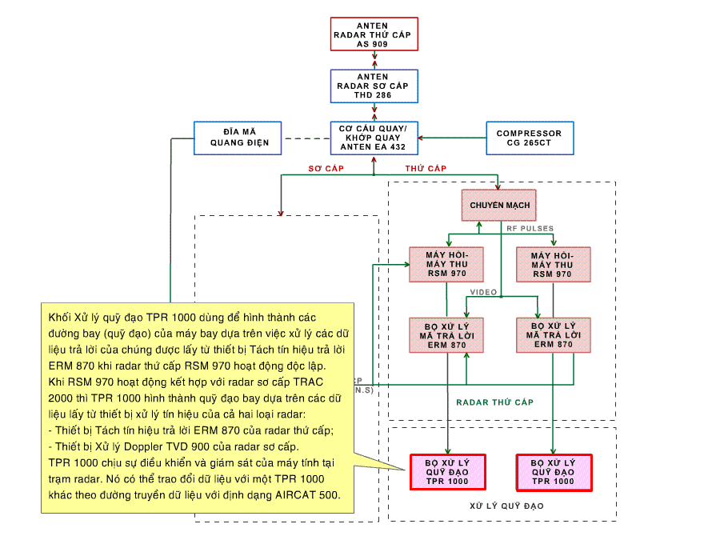

RSM 970- HOẠT ĐỘNG THEO SƠ ĐỒ CHỨC NĂNG |
KHỐI XỬ LÝ QUỸ ĐẠO TPR 1000 |
 |
ĐẶC TÍNH KỸ THUẬT CỦA TPR 1000 Các tín hiệu vào/ra TPR 1000 tương thích với các chuẩn dưới đây : - RS 232C, chuẩn truyền nối tiếp đồng bộ - không đồng bộ TPR 1000 quản lý 3 đường truyền nốii tiếp đồng bộ với thủ tục truyền riêng (protocol va format) cho mỗi đường : - RS422, chuẩn truyền song song cho phép truyền 2 chiều trên 16 bits hoặc trên 2 x 8 bits - IEEE 488 Các đặc tính chức năng của TPR 1000 phụ thuộc vào cấu hình của các cards được tích hợp trong khối va cac đặc tính của phần mềm ứng dụng. |
QUÁ TRÌNH XỬ LÝ TÍN HIỆU TẠI TPR 1000 1.CÁC THÔNG BÁO TRẢ LỜI |
| Thông báo “Bắt đầu chu kỳ hỏi” Với mỗi đường quét, thông báo “Bắt đầu chu kỳ hỏi” từ ERM 870 được sử dụng để: - Nhận dạng mode; - Xác định phương vị của anten; - Chia vòng quay (của anten) thành các block; - Điều khiển định thời (timing) xử lý. Các thông báo “Xuất hiện mục tiêu” Trong giai đoạn tiền xử lý chúng được sử dụng để phát hiện các mã trả lời đặc biệt: - Nhận dạng Quân sự (IM); - Cấp cứu Quân sự (DM). |
Trong giai đoạn xử lý tiếp theo chúng cho phép thực hiện các chức năng:
|
| 2. HỢP NHẤT ĐIỂM DẤU SƠ CẤP (PSR) VÀ THỨ CẤP (SSR) (xem thêm) |
Thu nhận điểm dấu mục tiêu
Thông báo phương vị: Tương tự như dữ liệu thông báo phương vị của SSR. |
Hợp nhất điểm dấu PSR và SSR Xác định các điểm dấu PSR và SSR tương ứng với cùng một mục tiêu theo các tiêu chuẩn của thuật toán đã chọn, tiến hành hợp nhất chúng làm một. Lọc trơn và thực hiện bám quỹ đạo theo thuật toán lọc Kalman. Xử lý tín hiệu trả lời phản xạ Để loại bỏ tín hiệu trả lời phản xạ, đối với mỗi tín hiệu cần kiểm tra tìm các quỹ đạo có đặc trưng: - Các mã trả lời mode A giống nhau. - Các mã trả lời mode C (nếu có) giống nhau. - Sự khác biệt về cự ly. - Sự khác biệy về biên độ (LogΣ) của các điểm dấu tương tự. - Tương quan với bản đồ các vật phản xạ cố định. Tiến hành so sánh liên tiếp trong một số vòng quét của anten radar thứ cấp, nếu khẳng định là tín hiệu phản xạ thì loại bỏ. Để dơn giản cho quá trình xử lý, thường kiểm tra loại bỏ tín hiệu phản xạ ở lân cận quỹ đạo mới. |
| ANTEN THỨ CẤP AS 909 | KHỐI CHUYỂN MẠCH | MÁY HỎI - MÁY THU RMS 970 | KHỐI XỬ LÝ VÀ TÁCH TÍN HIỆU TRẢ LỜI | KHỐI XỬ LÝ QUỸ ĐẠO TPR 1000 |